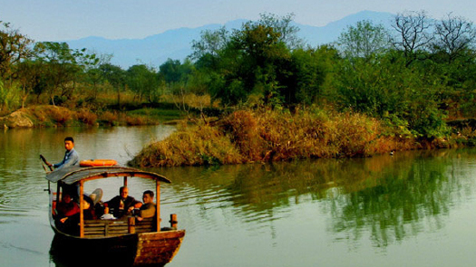

杭州西溪湿地公园 01
西溪湿地位于杭州，是去杭州旅游不可不去的地方。西溪湿地是国内第一个也是唯一一个集城市湿地、农耕湿地、文化湿地于一体的国家湿地公园。公园内有一部分是免费的，有一部分是要收费的。西溪湿地里面比较有名的有三堤，分别是福堤，绿堤和寿堤，其中福堤全场2000多米，贯穿了西溪湿地的几个景点，也是西溪湿地最长的堤。西溪湿地里面的各类风景都有，对游客来说是很好的。除此之外，西溪湿地最让人称道的，当属湿地博物馆了，中国湿地博物馆是全国唯一一家国家级的湿地博物馆，就位于西溪湿地，博物馆造型独特，展示方式结合了传统和现代的科技，非常的直观和形象，是了解湿地文化的好地方。杭州西溪湿地是一个不得不去的地方！